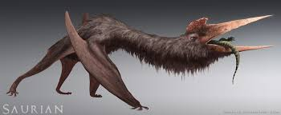

кецалькуатель
Опис Скам'янілості кетцалькоатля виявлено у Північній Америці. Назва дано на честь ацтекського бога Пернатого Змія . В даний час кетцалькоатль разом з арамбургіаною і хотегоптерікс є найбільшими відомими літаючими істотами за всю історію життя на планеті. Кетцалькоатль та арамбугіана були приблизно однакового розміру, тільки перший був трохи масивнішим. Розмір.Спочатку розмах крил оцінили 15,9 метра, усереднивши оцінку через пропорції інших птерозаврів. Однак у ході дослідження 1981 оціночний розмір зменшили до 11-12 метрів [ 3 ] . Пізніші дослідження ще зменшили розмах крил найбільшого викопного представника до 10—11 метрів [ 5 ] . Оцінити масу гігантських аждархид дуже складно, оскільки сучасних видів схожого розміру чи будівлі немає. Тому в різних публікаціях результати відрізняються [ 6 ] . У той час як деякі дослідження традиційно вказують вкрай низьку оцінну масу, як наприклад 70 кг для 10-метрової особини, в нових дослідженнях, опублікованих з початку 2000-х років, маса найбільшого представника Quetzalcoatlus northropi (зразок TMM 41450-3) з розмахом 20 крил 0 [ 7 ] [ 8 ] . Харчування.Про життєвий уклад кетцалькоатля існує кілька припущень. Оскільки кістки були знайдені за сотні кілометрів від берегової лінії, і слідів великих річок або глибоких озер знайдено не було, Дуглас Лоусон у 1975 році відкинув рибальську природу кетцалькоатля, припустивши, що тварина харчувалася падалью подібно до африканського марабу . Лоусон знайшов викопні залишки гігантського птерозавру під час пошуків кісток аламозавра , який був важливою частиною екосистеми . У 1996 році Томас Леман і Уонн Ленгстон [англ.] вказали, що будова нижньої щелепи відрізняється від такої у типових птахів - падальщиків . прочісуючи хвилі дзьобом